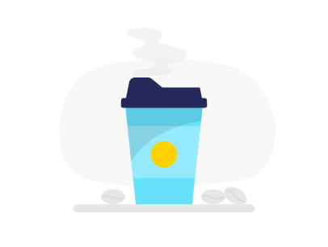
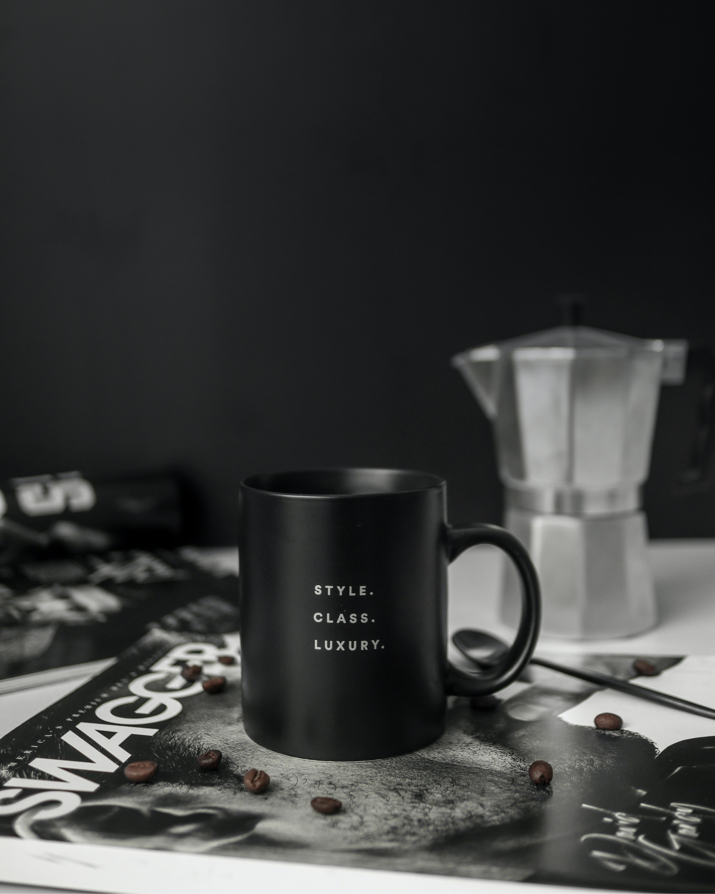
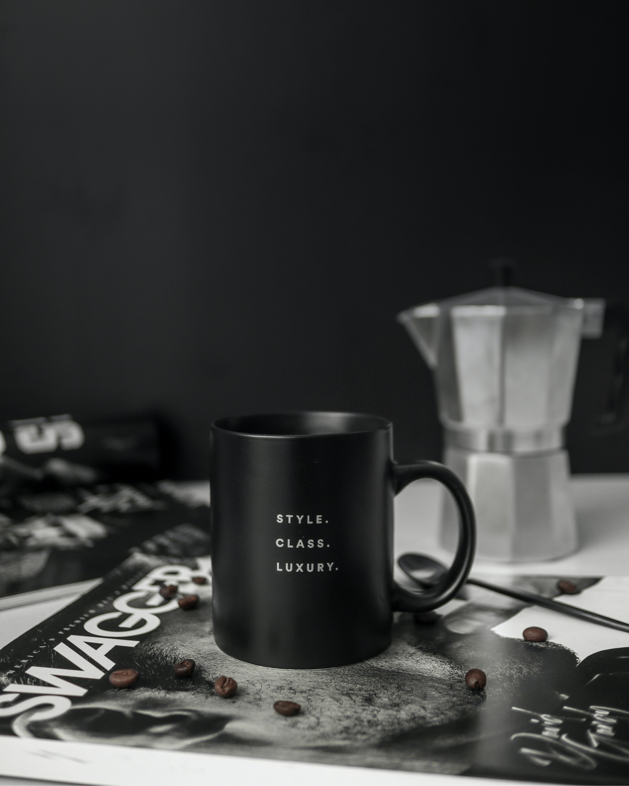
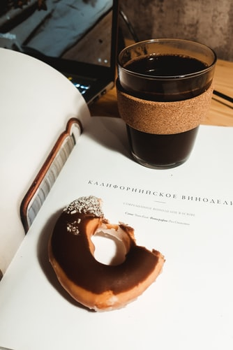
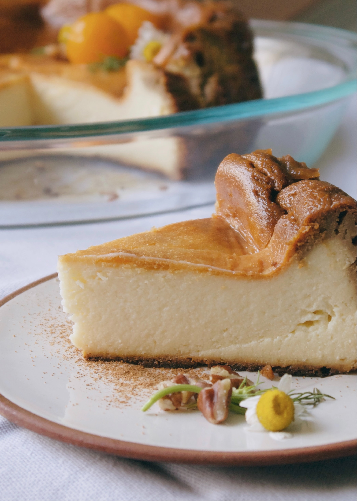
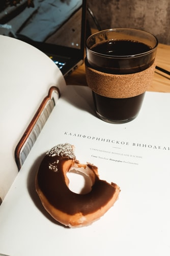
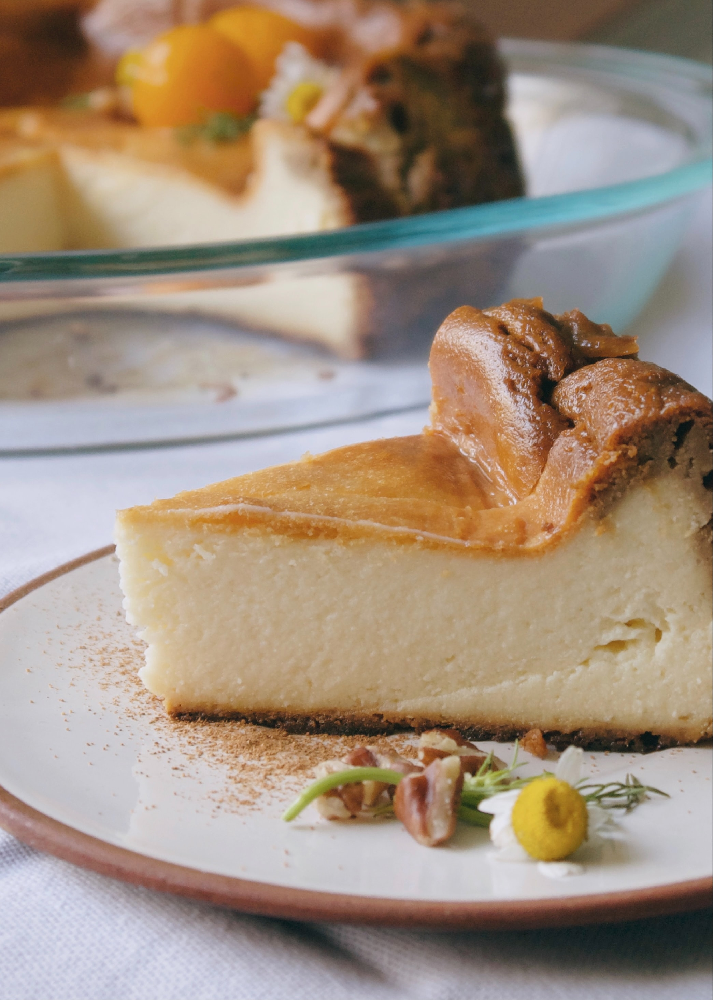
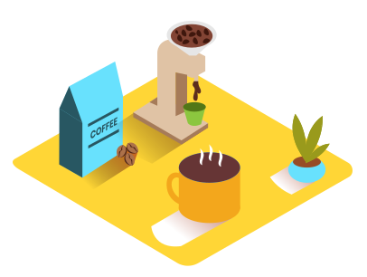
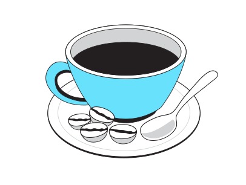
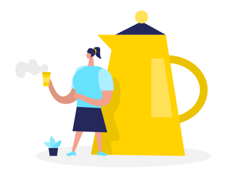

Tenemos lo mejor en:

1Calidad
Esta calidad depende de los cuidados y prácticas que siguen los caficultores, recolectores, procesadores, comercializadores, tostadores y consumidores, en los diferentes procesos, a través de las etapas de la cadena productiva del café
2Preparación
La materia prima, la cafetera y la conservación del café son algunas de las claves.
3Sabor
El café es también una fuente de inspiración y un motor que despierta la creatividad de las personas, por eso nuestro sabor es el mejor ayudandoté con esta experiencia.
Productos

 

 




Expertos en:

Café de máxima calidad

Catar diferentes tipos de café
